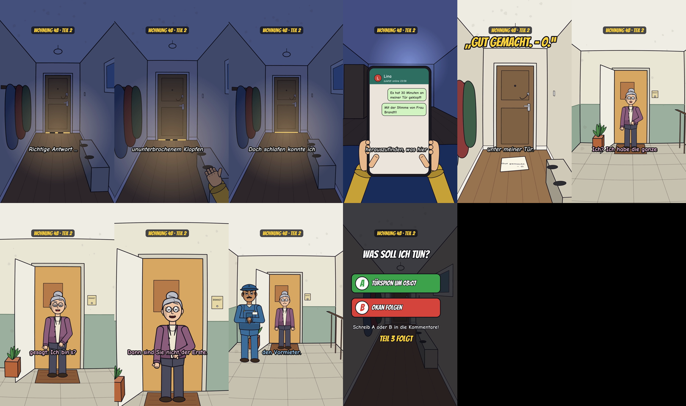
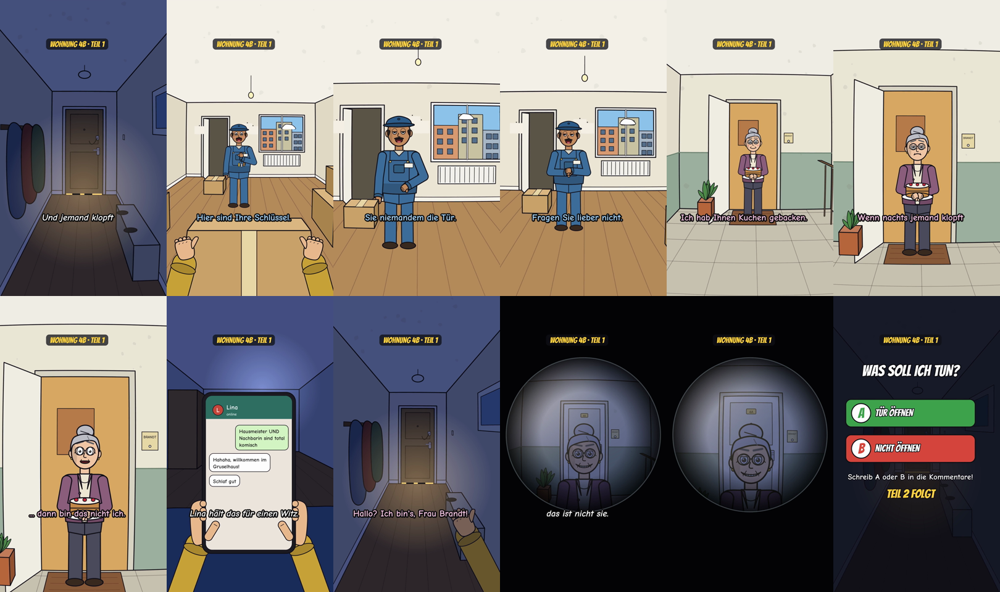
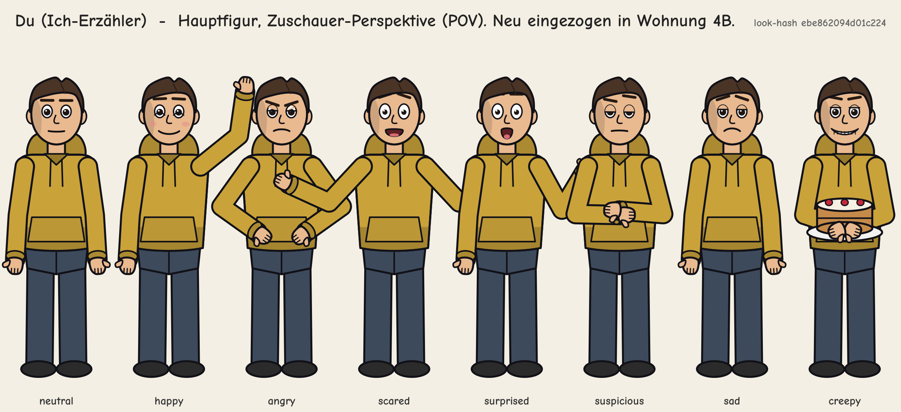
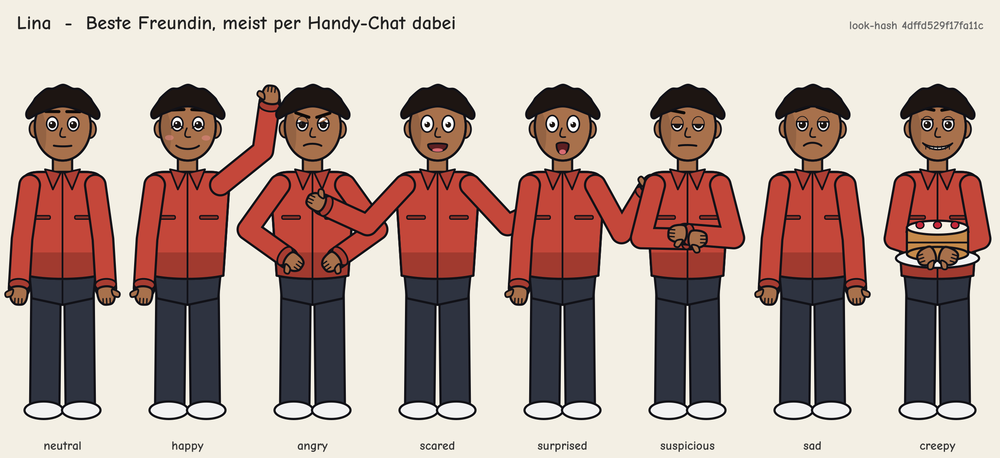

Lindenweg Studio
Veröffentlichung: AKTIV · manuelle Freigabe: nein · Mindest-QC: 90 Punkte · Stand 2026-11-16 18:34
Episoden
| Episode | Status | QC | Länge | Plattformen |
|---|---|---|---|---|
| WOHNUNG 4B · TEIL 2 Der Zettel |
Geplant (18:00) | 96.0/100 96.0 |
57.3 s | youtube |
| WOHNUNG 4B · TEIL 1 Die Regel |
Veröffentlicht | 98.0/100 98.0 |
56.2 s | youtube |
WOHNUNG 4B · TEIL 2 – Der Zettel
Die Zuschauer wählten B: nicht öffnen. Nach 30 Minuten Klopfen geht die Stimme. Am Morgen liegt ein Zettel unter der Tür: 'Gut gemacht. – O.' Frau Brandt hat die ganze Nacht geschlafen – und verrät: Du bist nicht der Erste. Dann taucht Okan auf.
QC-Punkte je Kategorie
Nicht bestandene Prüfungen
- Sprechtempo ≤ 4 Wörter/s: ['Dann sind Sie nicht der Erste.']
- Einstellungslänge 1-8,5 s (Tempo): [5, 9]
Abstimmung
noch keine Stimmen ausgewertet
Kontaktabzug

Sprachtest – Whisper hört jede Zeile ab
| Figur | Soll | Gehört | Ähnl. |
|---|---|---|---|
| du | Ihr habt euch für B entschieden. Richtige Antwort ... oder? | Ihr habt euch für B entschieden. Richtig Antwort, oder? | 0.93 |
| du | Nach dreißig Minuten ununterbrochenem Klopfen ging sie endlich. | Nach 30 Minuten ununterbrochenem Klopfen ging sie endlich. | 0.90 |
| du | Doch schlafen konnte ich diese Nacht nicht. | Doch schlafen konnte ich diese Nacht nicht. | 1.00 |
| du | Ich beschloss herauszufinden, was hier los ist. | Ich beschloss herauszufinden, was hier los ist. | 1.00 |
| du | Am Morgen lag ein Zettel unter meiner Tür. | Am Morgen lag ein Zettel unter meiner Tür. | 1.00 |
| du | Guten Morgen, Frau Brandt. Haben Sie heute Nacht bei mir geklopft? | Guten Morgen Frau Brunt. Haben Sie heute Nacht bei mir geklopft? | 0.94 |
| helga | Ich? Ich habe die ganze Nacht geschlafen. Wie ein Stein! | Ich habe die ganze Nacht geschlafen, wie ein Stein. | 0.95 |
| helga | Aber ... hat die Stimme gesagt: Ich bin's? | Aber hat die Stimme gesagt, ich bin's? | 1.00 |
| du | Ja. | Ja. | 1.00 |
| helga | Dann sind Sie nicht der Erste. | und dann sind sie nicht der Erste. | 0.93 |
| okan | Frau Brandt. Wir reden nicht über den Vormieter. | Frau Brandt, wir reden nicht über den Vormieter. | 1.00 |
| okan | Nicht über den Vormieter. | Nicht über den Vormieter. | 1.00 |
| du | Was soll ich tun? A: Heute Nacht durch den Türspion schauen. Oder B: Okan heimlich folgen? Schreib es in die Kommentare! | was soll ich tun? A. Heute naft durch den Türspion schauen oder B. Okan heimlich folgen schreib es in die Kommentare. | 0.97 |
WOHNUNG 4B · TEIL 1 – Die Regel
Neu in 4B: Hausmeister Okan verbietet, nachts die Tür zu öffnen. Nachbarin Frau Brandt warnt: 'Wenn jemand sagt, ich bin's – dann bin das nicht ich.' Um 03:07 klopft es – mit ihrer Stimme.
QC-Punkte je Kategorie
Nicht bestandene Prüfungen
- Sprechtempo ≤ 4 Wörter/s: ['... dann bin das nicht ich.', 'Ich weiß, dass Sie da sind.']
Abstimmung
A: 0 · B: 4 (Sieger: B)
Kontaktabzug

Sprachtest – Whisper hört jede Zeile ab
| Figur | Soll | Gehört | Ähnl. |
|---|---|---|---|
| du | Drei Uhr nachts. Und jemand klopft an meine Tür. | 3 Uhr nachts und jemand klopft an meine Tür. | 1.00 |
| okan | Willkommen in 4B! Hier sind Ihre Schlüssel. | Sie kommen in 4B, hier sind Ihre Schlüssel. | 0.85 |
| okan | Es gibt nur eine Regel: Nach Mitternacht öffnen Sie niemandem die Tür. | Es gibt nur eine Regel, nach Mitternacht öffnen sie niemandem die Tür. | 1.00 |
| okan | Niemandem. | Niemandem. | 1.00 |
| du | Äh... und warum? | Und warum? | 1.00 |
| okan | Fragen Sie lieber nicht. | Fragen Sie lieber nicht. | 1.00 |
| helga | Ach, der Neue aus 4B! Ich bin Frau Brandt. Ich hab Ihnen Kuchen gebacken. | Ach, der Neue aus Vierbe, ich bin Frau Brandt. Ich habe Ihnen Kuchen gebacken. | 0.90 |
| helga | Und noch etwas. Wenn nachts jemand klopft und sagt: Ich bin's ... | und noch etwas, wenn nachts jemand klopft und sagt, ich bin's. | 1.00 |
| helga | ... dann bin das nicht ich. | Und dann bin das nicht ich. | 0.91 |
| du | Lina hält das für einen Witz. Ich nicht. | Lina hält das für einen Witz, ich nicht. | 1.00 |
| helga | Hallo? Ich bin's, Frau Brandt! Bitte machen Sie auf! | Hallo, ich bin es Frau Brandt, bitte machen Sie auf. | 0.94 |
| du | Aber sie hat gesagt ... das ist nicht sie. | Aber sie hat gesagt, das ist nicht sie. | 1.00 |
| helga | Ich weiß, dass Sie da sind. | Ich weiß, dass sie da sind. | 1.00 |
| du | Was soll ich tun? A: Tür öffnen. Oder B: nicht öffnen? Schreib es in die Kommentare! | Was soll ich tun? a. Triö öffnen oder b. Nicht öffnen? Schreib es in die Kommentare. | 0.95 |
Serien
Wohnung 4B
Du ziehst in Wohnung 4B im Lindenweg 9. Der Hausmeister hat nur eine Regel: Nach Mitternacht niemandem die Tür öffnen. Dann klopft es um 03:07 Uhr.
Folgen: 2 veröffentlicht · Abstimmungen: 1
Pläne für die nächste Folge
A: Teil 3: 03:07 Uhr, du schaust durch den Türspion. Im Treppenhaus steht niemand – aber das Licht flackert, und vor 4A steht ein Paar Hausschuhe. Dann klopft es von INNEN an der Wohnungstür von Frau Brandt.
B: Teil 3: Du folgst Okan in den Keller. Ein Kellerabteil trägt die Nummer 4B und ein neues Schloss. Okan spricht leise mit jemandem hinter der Tür: 'Er hat nicht geöffnet. Er hat nicht geöffnet.'
Figuren-Datenbank
Du (Ich-Erzähler)
Hauptfigur, Zuschauer-Perspektive (POV). Neu eingezogen in Wohnung 4B.
neugierig, etwas ängstlich, trockener Humor, will Geheimnisse lösen
Stimme: Chatterbox (Referenz: Piper thorsten-medium (Thorsten-Datensatz, CC0))

Helga Brandt
Nachbarin aus 4A, wohnt seit 41 Jahren im Haus
warmherzig, backt ständig, plötzlich sehr ernst; hütet ein Geheimnis über das Haus
Stimme: Chatterbox (Referenz: Piper kerstin-low (HUI-Korpus/LibriVox, gemeinfrei))

Lina
Beste Freundin, meist per Handy-Chat dabei
lacht über alles Gruselige, mutig, schickt Sprachnachrichten
Stimme: Chatterbox (Referenz: Piper ramona-low (HUI-Korpus/LibriVox, gemeinfrei))

Okan Yilmaz
Hausmeister des Hauses Lindenweg 9
freundlich, aber verschwiegen; weiß mehr als er sagt; sagt Sätze immer zweimal, wenn es ernst wird
Stimme: Chatterbox (Referenz: Piper karlsson-low (HUI-Korpus/LibriVox, gemeinfrei))

Systemprüfung
- ✓ ffmpeg ffmpeg version 6.1.1-3ubuntu5 Copyright (c) 2000-2023 the FF
- ✓ Cairo (Vektorgrafik)
- ✓ Piper TTS
- ✓ Whisper (QC)
- ✓ OpenCV (Linse)
- ✓ NumPy
- ✓ Pillow
- ✓ requests
- ✓ Chatterbox Multilingual (.venv-tts) Hauptstimmen, MIT-Lizenz
- ✓ Piper-Stimme de_DE-eva_k-x_low
- ✓ Piper-Stimme de_DE-karlsson-low
- ✓ Piper-Stimme de_DE-ramona-low
- ✓ Piper-Stimme de_DE-thorsten_emotional-medium
- ✓ Referenzstimme du
- ✓ Referenzstimme helga
- ✓ Referenzstimme lina
- ✓ Referenzstimme okan
- ✓ Schrift Bangers
- ✓ Schrift Comic Neue
- ✓ Whisper-Modell 'small'
- ✓ YouTube-Zugang config/secrets/youtube.json oder YT_*-Variablen
- ✗ TikTok-Zugang config/secrets/tiktok.json
Protokoll (letzte 40 Einträge)
2026-11-16 14:15:53 [INFO] [wohnung-4b-e01] Sprachaufnahme Runde 2: neue Takes für [('3.0', 0.82, 'Und warum?')]
2026-11-16 14:16:53 [INFO] [wohnung-4b-e01] Sprachaufnahme Runde 3: neue Takes für [('3.0', 0.54, 'Warum?')]
2026-11-16 14:17:57 [WARN] [wohnung-4b-e01] Sprachaufnahme: 1 Zeile(n) nach 4 Takes noch fehlerhaft: [('3.0', 0.59, 'Und warum und war')]
2026-11-16 14:17:57 [INFO] [wohnung-4b-e01] Laufzeit 57.1 s, 12 Einstellungen – rendere Video
2026-11-16 14:18:17 [INFO] [wohnung-4b-e01] gerendert: [3, 6, 10] | aus Cache: [0, 1, 2, 4, 5, 7, 8, 9, 11]
2026-11-16 14:18:45 [INFO] [wohnung-4b-e01] Versuch 1: Zeitleiste + Stimmen
2026-11-16 14:19:19 [INFO] [wohnung-4b-e01] Sprachaufnahme Runde 1: neue Takes für [('10.0', 0.88, 'Ich weiß, dass sie da sind. A, O.')]
2026-11-16 14:19:45 [INFO] [wohnung-4b-e01] Sprachaufnahme: alle Zeilen sauber (Runde 2)
2026-11-16 14:19:45 [INFO] [wohnung-4b-e01] Laufzeit 56.2 s, 12 Einstellungen – rendere Video
2026-11-16 14:20:04 [INFO] [wohnung-4b-e01] gerendert: [3, 6, 10] | aus Cache: [0, 1, 2, 4, 5, 7, 8, 9, 11]
2026-11-16 14:20:40 [INFO] [wohnung-4b-e01] Qualitätskontrolle läuft
2026-11-16 14:21:24 [INFO] [wohnung-4b-e01] QC Versuch 1: 98.0 Punkte – bestanden
2026-11-16 14:23:55 [INFO] [wohnung-4b-e01] freigegeben von mensch
2026-11-16 14:36:22 [ERROR] [wohnung-4b-e01] Veröffentlichung auf youtube fehlgeschlagen: YouTube-Zugangsdaten fehlen (python -m studio auth-youtube)
2026-11-16 15:37:15 [INFO] [wohnung-4b-e01] veröffentlicht auf youtube: {'platform': 'youtube', 'id': 'ITDHPKi_O-Y', 'url': 'https://youtube.com/shorts/ITDHPKi_O-Y', 'privacy': 'public'}
2026-11-16 18:05:33 [INFO] [wohnung-4b-e02] Versuch 1: Zeitleiste + Stimmen
2026-11-16 18:14:59 [INFO] [wohnung-4b-e02] Sprachaufnahme Runde 1: neue Takes für [('1.0', 0.81, 'Nach 30 Minuten ununterbrochenem Klopfen ding sie endlich.')]
2026-11-16 18:16:01 [INFO] [wohnung-4b-e02] Sprachaufnahme: alle Zeilen sauber (Runde 2)
2026-11-16 18:16:01 [INFO] [wohnung-4b-e02] Laufzeit 58.9 s, 10 Einstellungen – rendere Video
2026-11-16 18:17:03 [INFO] [wohnung-4b-e02] gerendert: [0, 1, 2, 3, 4, 5, 6, 7, 8, 9] | aus Cache: []
2026-11-16 18:17:39 [INFO] [wohnung-4b-e02] Qualitätskontrolle läuft
2026-11-16 18:18:16 [INFO] [wohnung-4b-e02] QC Versuch 1: 96.0 Punkte – bestanden
2026-11-16 18:18:16 [INFO] [wohnung-4b-e02] automatisch freigegeben (QC 96.0 >= 90)
2026-11-16 18:19:24 [INFO] [wohnung-4b-e02] Versuch 1: Zeitleiste + Stimmen
2026-11-16 18:20:58 [INFO] [wohnung-4b-e02] Sprachaufnahme: alle Zeilen sauber (Runde 1)
2026-11-16 18:20:58 [INFO] [wohnung-4b-e02] Laufzeit 56.4 s, 10 Einstellungen – rendere Video
2026-11-16 18:21:55 [INFO] [wohnung-4b-e02] gerendert: [0, 1, 2, 3, 4, 5, 6, 7, 8, 9] | aus Cache: []
2026-11-16 18:22:32 [INFO] [wohnung-4b-e02] Qualitätskontrolle läuft
2026-11-16 18:23:12 [INFO] [wohnung-4b-e02] QC Versuch 1: 96.0 Punkte – bestanden
2026-11-16 18:23:12 [INFO] [wohnung-4b-e02] automatisch freigegeben (QC 96.0 >= 90)
2026-11-16 18:23:30 [INFO] [wohnung-4b-e02] Versuch 1: Zeitleiste + Stimmen
2026-11-16 18:24:35 [INFO] [wohnung-4b-e02] Sprachaufnahme: alle Zeilen sauber (Runde 1)
2026-11-16 18:24:35 [INFO] [wohnung-4b-e02] Laufzeit 57.3 s, 10 Einstellungen – rendere Video
2026-11-16 18:24:49 [INFO] [wohnung-4b-e02] gerendert: [5] | aus Cache: [0, 1, 2, 3, 4, 6, 7, 8, 9]
2026-11-16 18:25:26 [INFO] [wohnung-4b-e02] Qualitätskontrolle läuft
2026-11-16 18:26:05 [INFO] [wohnung-4b-e02] QC Versuch 1: 96.0 Punkte – bestanden
2026-11-16 18:26:05 [INFO] [wohnung-4b-e02] automatisch freigegeben (QC 96.0 >= 90)
2026-11-16 18:26:19 [INFO] [wohnung-4b-e02] veröffentlicht auf youtube: {'platform': 'youtube', 'id': 'ehgI-k-milA', 'url': 'https://youtube.com/shorts/ehgI-k-milA', 'privacy': 'public'}
2026-11-16 18:34:02 [WARN] [wohnung-4b-e02] Video ehgI-k-milA war versehentlich sofort öffentlich und ist nicht mehr auf dem Kanal – neu einplanen für 17.11. 18:00
2026-11-16 18:34:12 [INFO] [wohnung-4b-e02] veröffentlicht auf youtube: {'platform': 'youtube', 'id': 'LR2S_nm4mjU', 'url': 'https://youtube.com/shorts/LR2S_nm4mjU', 'privacy': 'public', 'publish_at': '2026-11-17T17:00:00Z'}